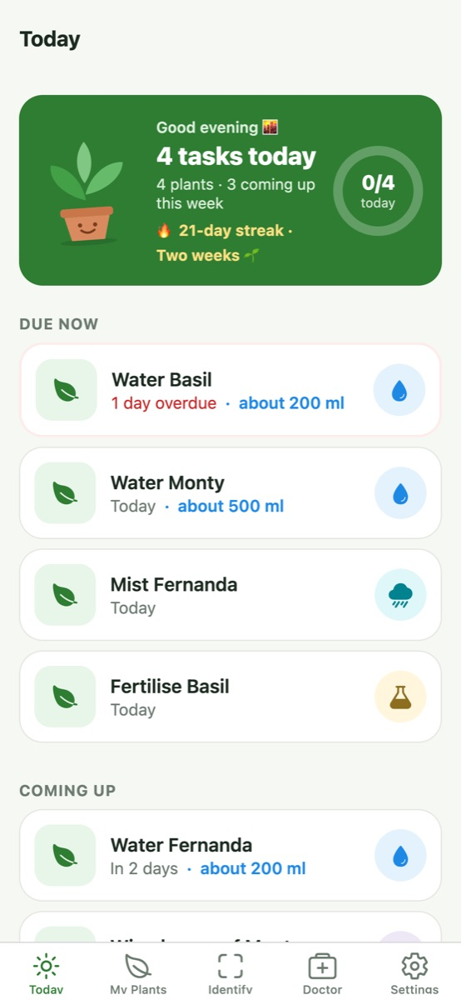
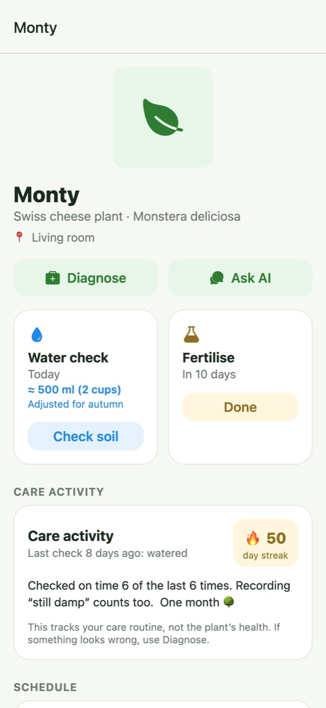
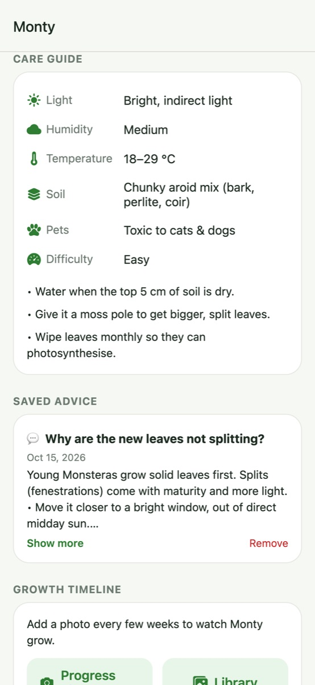

Happy plants, happy you.
Identify plants, get care advice for each one, and keep track of watering, feeding and more. Free, with no account.
The beta runs in your phone's browser: try identification, plant advice and care tracking. Automatic reminders are coming in the iPhone app. Setup tips



What it does
📸 Identify any plantSnap a leaf or flower and get its name and a care guide.
💧 Check soil, then waterEach check asks: dry, still damp, or not sure? Schedules are adjusted for season, pot, light and rain. Reminders come in the iPhone app.
🩺 Plant doctorPhoto diagnosis plus an AI you can ask about each plant.
🪴 Full careFeeding, misting, leaf cleaning, repotting, and how much water to give.
🔥 Check-in streaksRewards checking on your plants, including deciding one doesn't need water yet. Plus a growth photo timeline.
🔒 Private by designYour collection is stored on your device. Identification and AI advice send only what they need to external services. No ads, no tracking.